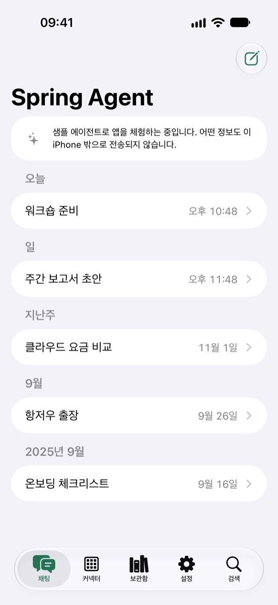
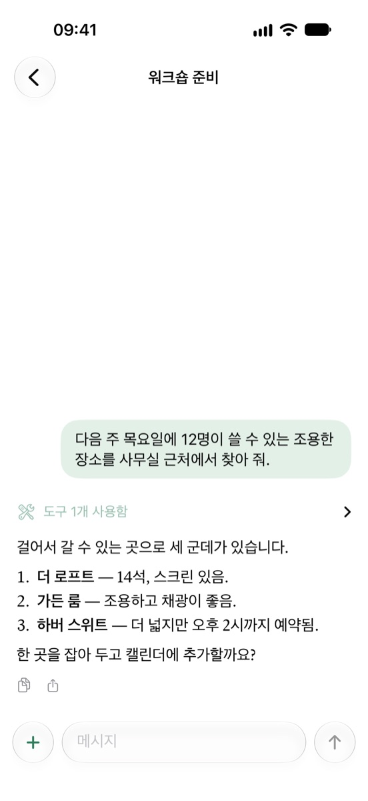
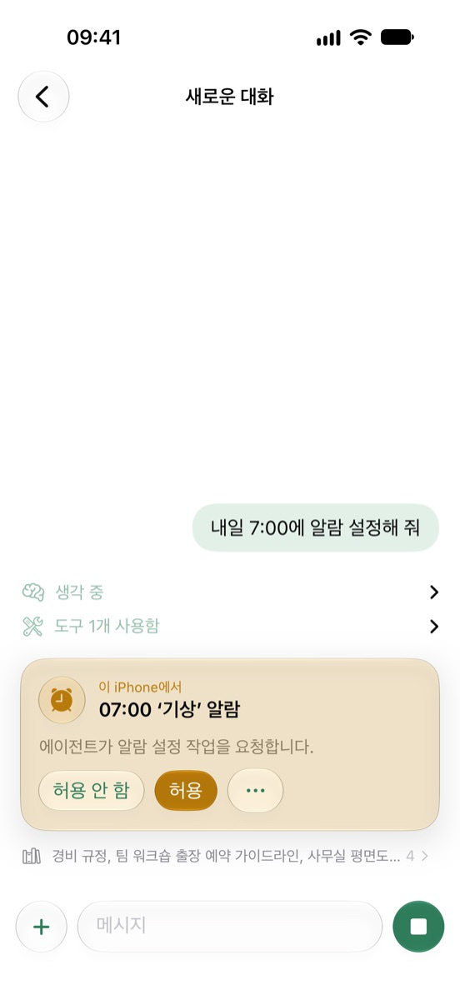
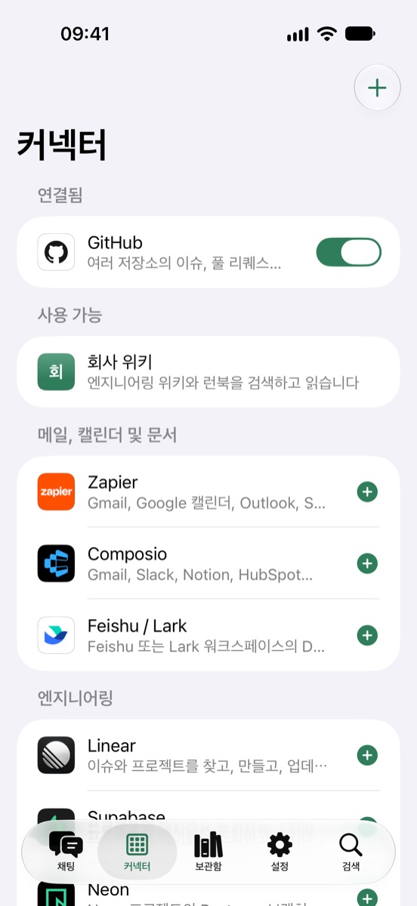
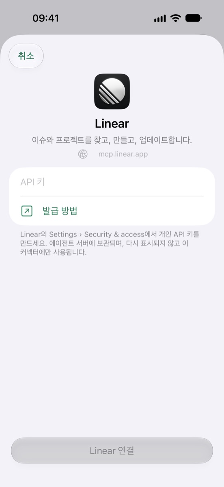
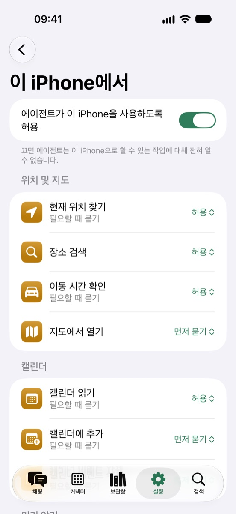
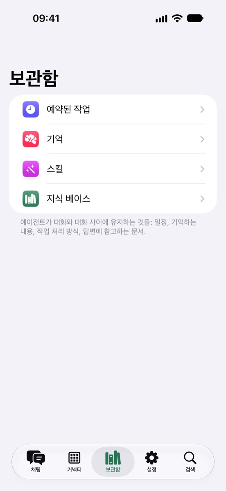
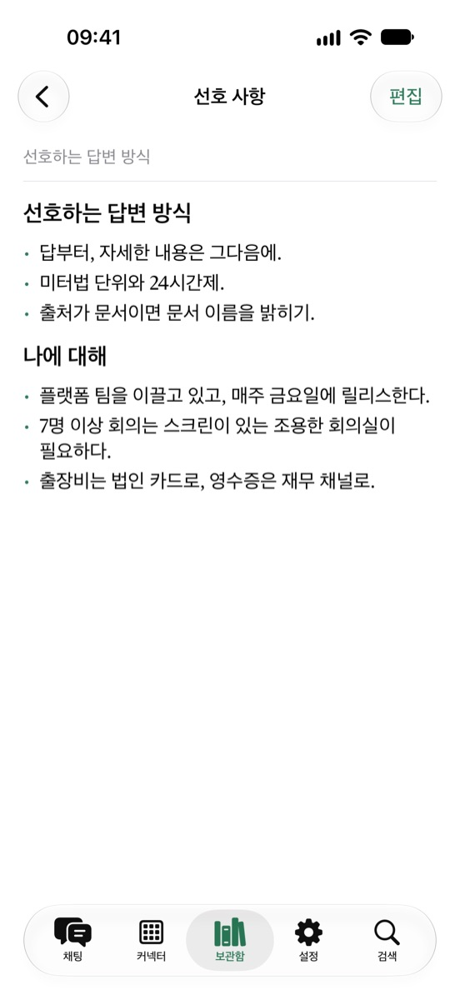

나만의 AI 에이전트를 손안에.
Spring Agent는 직접 운영하는 에이전트를 위한 iPhone 앱입니다. 에이전트와 대화하고, 에이전트가 거치는 모든 단계를 확인하고, 작업에 필요할 때 iPhone을 사용하도록 허용하세요. 언제나 사용자의 동의하에.

Spring Agent는 직접 운영하는 에이전트를 위한 iPhone 앱입니다. 에이전트와 대화하고, 에이전트가 거치는 모든 단계를 확인하고, 작업에 필요할 때 iPhone을 사용하도록 허용하세요. 언제나 사용자의 동의하에.

에이전트는 사용자의 서버에서 계속 실행됩니다. 앱은 에이전트를 들여다보는 창이자, 작업에 이 iPhone이 필요할 때는 에이전트의 손이 되어 줍니다.
스트리밍으로 도착하는 답변과 함께 에이전트의 생각 과정, 사용한 모든 도구, 참고한 출처를 탭 한 번으로 확인할 수 있습니다.
위치, 캘린더, 미리 알림, 알람, 건강, 연락처, 사진까지. 에이전트는 먼저 여기에서 요청하고, 도구마다 얼마나 자유롭게 사용할지는 사용자가 정합니다.
MCP를 통해 GitHub, Linear, Stripe, Zapier, Feishu 등을 에이전트에 연결하거나, 직접 운영하는 MCP 서버를 추가하세요.
예약된 작업, 기억, 스킬, 지식 문서 등 에이전트가 대화와 대화 사이에 유지하는 내용을 읽고 편집할 수 있습니다.
앱은 사용자가 로그인한 서버와만 통신합니다. 분석과 추적이 없으며, 직접 운영하는 서버라면 별도의 계정 등록도 필요 없습니다.
내장된 샘플 에이전트로 앱의 모든 기능을 iPhone 안에서 바로 확인할 수 있습니다.







에이전트와 대화하고, 캘린더나 위치를 읽도록 허용하는 것은 무료입니다. Pro를 사용하면 에이전트가 이 iPhone에서 알람, 이벤트, 미리 알림, 건강 기록, 메일과 메시지 초안 등을 변경할 수 있고, 커넥터를 세 개 넘게 켤 수 있습니다.
직접 운영하는 서버가 없나요? Spring Agent Cloud가 에이전트를 대신 운영하며, Pro의 모든 기능이 포함됩니다. 앱을 열어 두지 않아도 됩니다. 작업에 이 iPhone이 필요하면 요청이 실패하지 않고 최대 하루 동안 기다립니다. 허용한 작업은 백그라운드에서 실행되고, 먼저 물어야 하는 작업은 알림이 오면 탭해서 허용하면 대화가 이어집니다. 질문이 있거나 답변이 준비되었을 때도 알림이 옵니다.
매월
매년, 신규 구독자는 1주일 무료 체험 가능
미국 가격 기준이며, 실제 가격은 App Store에 표시됩니다. 구독은 현재 기간이 끝나기 최소 24시간 전에 설정 › Apple 계정 › 구독에서 취소하지 않으면 자동으로 갱신됩니다. 이용 약관을 참고하세요.
질문, 버그 제보, 아이디어가 있다면 GitHub에 이슈를 등록하거나 contact@kezhenxu94.me로 메일을 보내 주세요. 나만의 에이전트 서버를 운영하려면 Spring Agent 저장소에서 시작하세요.